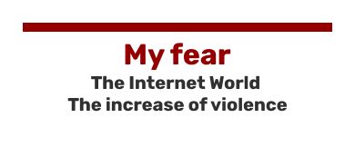
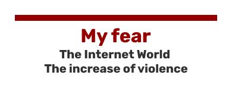

These fears are likely to increase over time.
Indeed, It is true that the Internet can have beneficial sides, as explained with the example of hope I quoted, however there is still a side of the coin that could point to contradictory effects.
My first fear would be to have a life entirely focused on the Internet. With many more and more immersive innovations in our daily lives, we could become quite dependent on technology, and thus no longer be able to think for ourselves, using only artificial intelligences to guide our actions.
For example, I am concerned about the design of a chip that would integrate directly into our body to increase our brain capacity. I also wonder about the apprehension of the digital on the youngest. The new generations are being driven by the digital age. It comes from their legitimacy to be so young present on the Internet (in relation to social networks in particular and the question of the legal age to be registered). For example, I am afraid to watch powerless our generations totally dependent on the Internet, acting only through this and completely matrixed by the toxic behaviors maintained there, protected by anonymity.
Can we manage to take a step back on Internet innovations and thus refocus on a healthy lifestyle and without dependence on digital? Is it possible to force future generations to use the Internet correctly ?
In addition, the speed of social networks endangers the processing and appropriation of information. The Internet has no limits. Let’s take the example of a video that was just posted. We can deduce from two scenarios: it can either provoke a small audience, or be relayed massively. And here is the danger: a broad audience rhymes with a flow of different thoughts and opinions. Quickly, this video can be misinterpreted and can become a controversy. It becomes very difficult to value the views of everyone, and we tend to want to be heard at all costs.
It is difficult to understand everyone’s opinion and accept the difference. Some violence emerges with the Internet. Cyber-harassment is a good example. Other violence crosses the real. Some clashed over a tweet, others over a fake account.
A question then comes to my mind : should we limit freedom of expression on the Internet, and thus prevent possible consequences ?